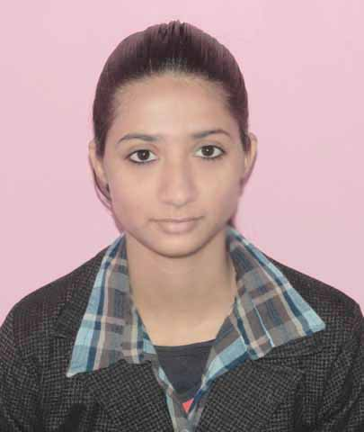

Rashida
on 2012-05-23
APTRON training is remarkable training center in Noida for Ab initio with organized course-ware. I am quite sure that I will get Ab initio profession job shortly.
Rating:5/5
5 Star Rating: Excellent
Anita Singh
on 2012-10-06
I am Anita Singh from Noida. By my friend reference I taken admission in APTRON training institute in Noida. Really very good institute now I am working in a MNC in Noida.
Rating:4/5
4 Star Rating: Excellent
Bharti Arora
on 2014-06-16
This Bharti Arora from Noida, This is the best Ajax Training Institute for professionals to learn latest technologies. Trainer knowledge is really helped us to understand about technologies.
Rating:5/5
5 Star Rating: Excellent
Amita Sharma
on 2012-09-13
Hi guys!!! I am Amita from Noida. By my friends reference I took admission in APTRON training institute. Truly very good institute , now I am working in a private firm in Delhi.
Rating:4/5
4 Star Rating: Excellent
Sangeeta
on 2011-04-11
This is Sangeeta from Noida. APTRON is a wonderful institute with helpful staff. I have done Android course training from here. Truly, very good institute.
Rating: 5/5
5 Star Rating: Excellent
Surendra Kumar
on 2012-08-10
Hi ! This is Surendra, I have done my training on Animation and Multimedia training from APTRON training center in Noida. The environment was outstanding, I like those days of my training.
Rating:4/5
4 Star Rating: Excellent
Ranjeet
on 2011-02-06
I am Ranjeet from Noida. I get admission in ASP .NET training course in APTRON training institute. I would like to say that it is the first-rate institute in Noida. Now, I am working in a private firm in Delhi.
Rating: 5/5
5 Star Rating: Excellent
Amit Singh
on 2012-08-10
I am Amit Singh from Noida. By reference I taken admission in APTRON training institute in Noida. Really very good institute now I am working in a MNC in Noida.
Rating: 4/5
5 Star Rating: Excellent
Deepak Kumar

on 2011-09-13
I was not having much information about APTRON but my friend suggested me to join APTRON training institute, after joining for Automation Testing Training course training. I felt this is the best institute and other facilities are tremendous.
Rating: 4/5
4 Star Rating: Excellent
Aparna
on 2014-04-08
APTRON training center in Noida is recommend by one of my friend. I have finished Big Data training and now I am attending interviews.
Rating: 5/5
5 Star Rating: Excellent
Sandeep
on 2014-12-09
This is Sandeep from Noida, I would like to express gratitude to the faculty of APTRON training institute for the best CAD training in Noida.
Rating: 4/5
4 Star Rating: Excellent
Madhvi
on 2012-03-12
The environment of APTRON training institute is excellent.Even the fee structure is also good and I have completed my CCNA training course. Thanks Madhvi from Noida
Rating: 5/5
5 Star Rating: Excellent
Rahul Baloni
on 2013-02-07
This Rahul Baloni from Noida. I finished CCNP Training Course from APTRON Noida Center. Institute is very good, Faculties are very helpful & teaching standard is so good.
Rating: 4/5
5 Star Rating: Excellent
Deepa
on 2011-04-25
I was not having much information about APTRON but my friend suggested me to join APTRON training institute , after joining for Cloud Computing course training. I felt this is the best institute and other facilities are tremendous.
Rating: 4/5
4 Star Rating: Excellent
Nandita Bist
on 2014-02-12
I have learned Cognos course training from APTRON Training Institute in Noida. The faculties are very good and they helped me in every aspect.
Rating: 5/5
5 Star Rating: Excellent
Amit Singh
on 2012-08-10
I am Amit Singh from Noida. By reference I taken admission in APTRON training institute in Noida. Really very good institute now I am working in a MNC in Noida.
Rating: 4/5
5 Star Rating: Excellent
Aradhya
on 2014-02-11
I have learned CSS training course in APTRON training institute from Noida. My technical skills are enhanced after joining this course.
Rating: 5/5
5 Star Rating: Excellent
Neha Sharma
on 2012-08-10
If any person is searching for a institute having good knowledge in low rated Datastage course then APTRON training institute is best for you. You can take proper knowledge from here. I done Datastage course from here.
Rating: 4/5
4 Star Rating: Excellent
Anand Kumar
on 2013-05-17
APTRON training institute has radiant Data Warehousing course training. I am Anand from Noida, have completed my Data Warehousing course training and the coaching is really nice.
Rating: 4/5
4 Star Rating: Excellent
Sanjeev Yadav

on 2012-08-12
APTRON training institute center in Noida has very brilliant and trained trainers, which help me to get skilled in Drupal.
Rating: 5/5
5 Star Rating: Excellent
Parnita
on 2014-12-09
Hello I am Parnita from Noida. I have done ETL Testing training course from APTRON . After completion my ETL Testing training course I directly recruited to a MNC company.
Rating: 5/5
5 Star Rating: Excellent
Ramlakhan Singh

on 2012-03-25
Get an excellent trainer for Exchange server training with splendid lab facilities. We always advise APTRON training institute for Exchange server training in Noida.
Rating: 4/5
4 Star Rating: Excellent
Varun

on 2011-06-03
I have done my Hadoop Training in APTRON training institute, the advanced Hadoop training done through quick track with simply two advanced Hadoop training trainees. -Varun from Noida.
Rating: 4/5
4 Star Rating: Excellent
Siddartha
on 2013-05-17
APTRON training in Noida has assisted me to improve my Hibernate skills, after completion of Hibernate training from APTRON training in Noida. I am more confident after shaping my skills. Thanks Siddartha
Rating: 5/5
5 Star Rating: Excellent
Pooja Singh
on 2012-11-02
APTRON training is remarkable training center in Noida for HTML with organized course-ware. I am quite sure that I will get HTML profession job shortly.
Rating: 5/5
5 Star Rating: Excellent
Amitesh Kumar
on 2012-05-11
I am Amitesh from Noida.
By reference I taken admission in APTRON training institute in Noida. Really very good institute now I am working in a MNC in Noida.
Rating: 4/5 4 Star Rating: Excellent
Santosh Sharma
on 2014-10-29
APTRON training offers ITIL training with working professionals. If you want to take ITIL training in Noida then immediately join APTRON.
Rating: 5/5
5 Star Rating: Excellent
Alka Singh
on 2012-08-14
APTRON training is offering J2EE placement & training assistance. I was placed immediately after the completion of J2EE course training. Thanks Alka from Noida.
Rating: 4/5
4 Star Rating: Excellent